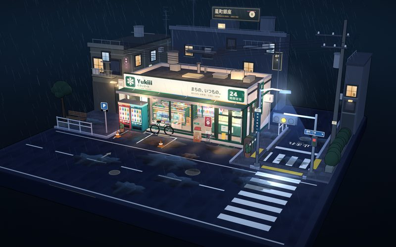
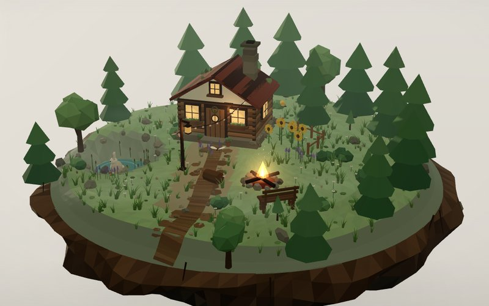
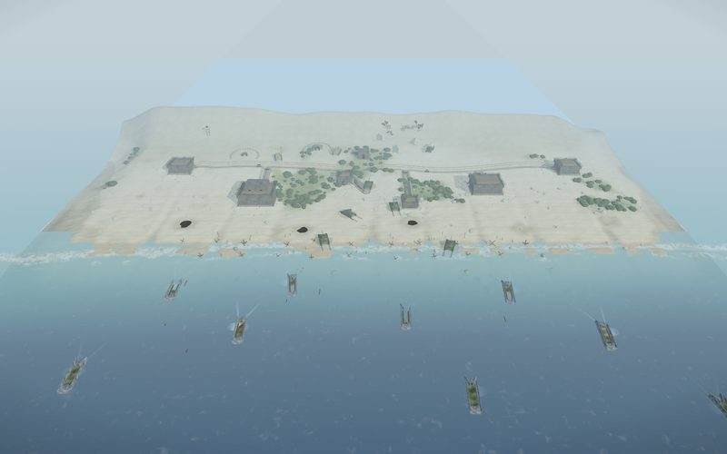
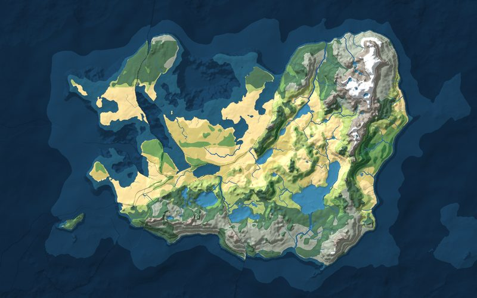

雨夜便利店 · Rainy Night Konbini
一个可以拖动、旋转、缩放的雨夜街角小场景：日式便利店、发光的冷柜、自动贩卖机、自行车、斑马线和一直下着的雨。使用 DeepSeek-v4.1-Flash-1017 生成。
去看看 →About
我是 Yukiii，17 岁。
站上现在有几个能直接在浏览器里玩的小项目，无需下载，点开即玩。 我知道没几个人会打开这个网站，所以我写的基本都是给我自己看的，在枯燥无味的学习生活中有一个能供我娱乐的地方也挺不错。
什么都想学点，但也都大多学艺不精，程序大部分都是 AI 帮忙写的，正在学习 HTML / CSS / JavaScript 等。
Skills
“与天奋斗，其乐无穷；与地奋斗，其乐无穷；与人奋斗，其乐无穷。”
下面按「学到哪了」分个类。
正在学
用过一点
AI 助手
Work
做过的和正在做的小东西，都放在这里。点进去就能玩。
一些可互动的观赏场景，使用 DeepSeek 生成。

一个可以拖动、旋转、缩放的雨夜街角小场景：日式便利店、发光的冷柜、自动贩卖机、自行车、斑马线和一直下着的雨。使用 DeepSeek-v4.1-Flash-1017 生成。
去看看 →
一座漂浮在林间的低多边形微缩小屋。使用 DeepSeek-v4.1-Flash-1017 生成。
去看看 →
一段诺曼底登陆的海岸防线：可以拖动旋转、滚轮缩放，右侧面板可切换视角与昼夜。建议使用电脑观看。使用 DeepSeek-v4.1-Flash-1017 生成。
去看看 →以娱乐为主的可游玩小游戏。
根据不同种子生成不同结果。

生成一个四面环海的完整世界版图，可换种子、调陆地占比和环海宽度，还能切换气温、降水、板块等图层。
去看看 →Project / Others
2D 文字战术指挥游戏 · Windows
你是一支九人侦察小队的队长。在卡累利阿的针叶林里带队潜伏、侦察、和友军队伍配合，在暴露、体力与队员之间的信任里做取舍。文字优先：九个人各有裂缝，关键选择会跨章延续。
因学业原因于 2026 年 11 月 7 日暂停更新